My name is Stepan Demchyshyn and I am a PhD student researching light emitting flexible and stretchable materials in Soft Matter Physics Department (SOMAP) at Johannes Kepler University in Linz, Austria. I focus on combining my previous experience with metal halide perovskite crystals with highly deformable materials to create next generation light emitting materials.
If you are interested, you can download my CV here or contact me at stepan.demchyshyn@jku.at or follow/DM me on Twitter.
